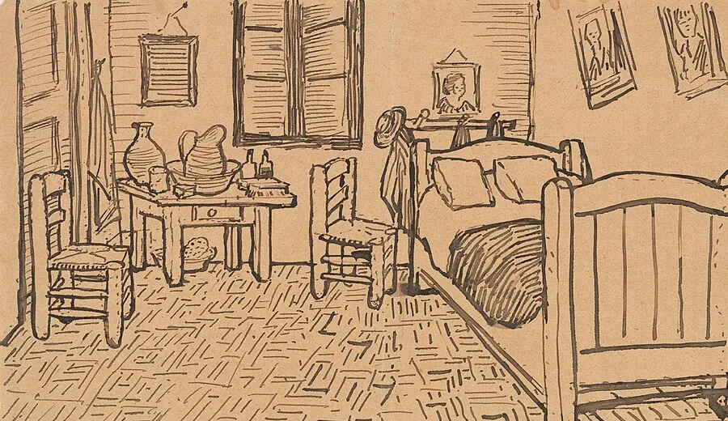

03Histórias e criação
O que transforma uma ideia numa história?
Em outubro de 1888, Van Gogh desenhou o seu quarto numa carta ao irmão. Um esboço também é uma maneira de pensar uma obra. Aqui experimentas uma escolha de cada vez.

Vincent van Gogh, esboço de O Quarto enviado ao irmão, Theo, com a carta 705 (Arles, 16 de outubro de 1888). Pena e tinta sobre papel. Van Gogh Museum, Amesterdão (Vincent van Gogh Foundation). Wikimedia Commons. Domínio público.

Começa por aqui
Uma chave na mesa
Uma chave na mesa. Alguém a leva. Mudas três decisões (a ação, a ordem da informação e o ritmo) e comparas a tua versão com a inicial.
Abrir Escrever ficção: o começoOu escolhe outra pergunta
Que contradição dá começo a uma história?
Inventas três personagens: nome, idade, ofício, um medo, um desejo e uma contradição para cada uma. Se quiseres, com o relógio de cinco minutos.
Que plano liga uma perda a uma devolução?
Uma carteira perdida, uma carteira devolvida. Entre as duas falta um plano: escolhes um e vês que hipóteses aguentam.
O que muda numa frase quando sabes mais?
Uma frase de Kafka, lida três vezes: onde muda de mundo, o que te deixa dizer e o que muda quando sabes mais.
As ideias caem do céu?
Decides: sim, não ou depende. Tens a razão de quem diz que sim, a de quem diz que não e uma objeção. Guardas a tua posição e voltas a ela na última sessão.
Para aplicar
Do conto à prancha
Um conto curto em domínio público, transposto por ti para oito a doze pranchas de banda desenhada ou para um animatic de um minuto. O trabalho é escolher o que se corta.
É para uma aula? Vai a Ideias: duas sessões publicadas, com guião para imprimir
Ver tudo neste tema
As páginas deste tema, por tipo. Quase todas pertencem ao Laboratório; o projeto está em Projetos e aparece aqui por ligação.
O Laboratório
Ideias
- Ideias: o método em cinco passos
- Sessão 1: Ver ou observar? (passo 1 de 5)
- Sessão 2: O cocheiro (passo 1 de 5)
- Guião de Ideias, para imprimir
Observar
- Observar: como os outros fizeram
- Leonardo
- Certa manhã
- Repórter X: ficção com cara de verdade
- Luiz Pacheco: dizer em nome próprio
- Duchamp
Treinar
Criar
- Criar: uma peça, com palavras e imagens
- Escrever ficção: o começo
- Escrever ficção: o começo, mudar a cena e comparar versões
- Escrever ficção: a personagem
- Uma cena com subtexto
- Exposição, nó, desenlace
- Do conceito ao argumento
- O readymade de palavras
- Fazer e voltar a ver
- Fora da página